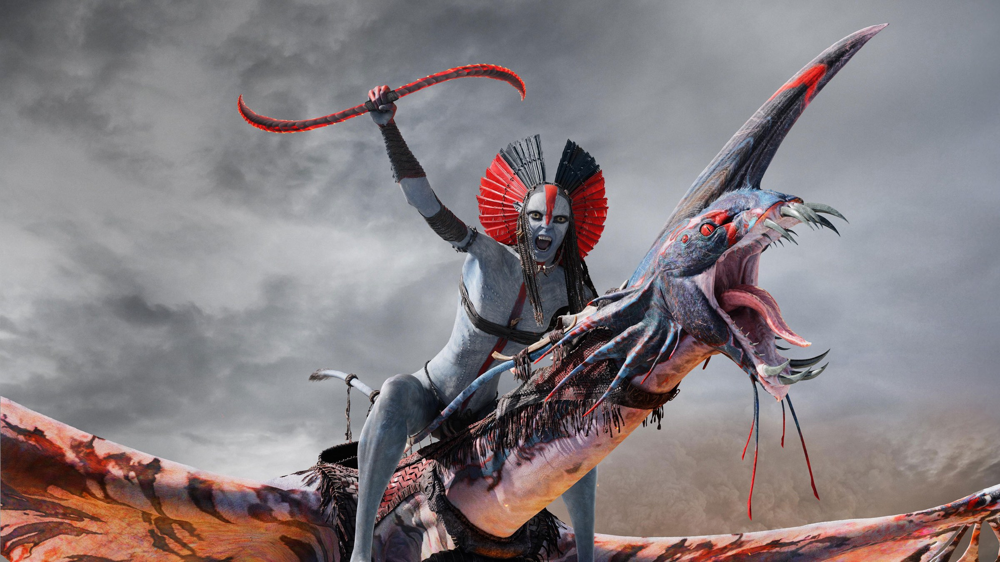

Avatar: Fire and Ash: 6 curiosità sul terzo film
Dal significato del titolo al popolo della cenere nato in Papua Nuova Guinea, dalle armi tolte dalla sceneggiatura ai 48 fotogrammi al secondo: cosa c'è dietro il terzo viaggio su Pandora
Avatar: Fire and Ash, in Italia Avatar: Fuoco e cenere, è nelle sale italiane dal 17 dicembre 2025 e prosegue la storia della famiglia Sully con un film più cupo dei due precedenti. Prima di entrare in sala vale la pena sapere come ci è arrivato. Dietro le tre ore e diciassette minuti di durata c'è un titolo con un significato preciso, un popolo nato da un viaggio di Cameron dall'altra parte del mondo, un'attrice che si è inventata l'arma del suo personaggio e una sceneggiatura corretta dopo aver visto la reazione del pubblico al film precedente. Ecco sei cose da sapere, senza spoiler.
Il titolo ha un significato preciso
Il titolo è stato svelato il 9 agosto 2024 al D23, la convention dei fan della Disney. In quell'occasione Cameron ha spiegato che il fuoco rappresenta l'odio, la violenza, il trauma e l'abuso di potere, mentre la cenere è ciò che resta dopo: il lutto, il dover convivere con quello che si è fatto. È una lettura che dice molto del tono del film. Come ha raccontato SlashFilm, il regista aveva anticipato un territorio difficile per tutti i personaggi, e la logica è circolare: il dolore che la cenere porta con sé alimenta nuovo fuoco.
Il popolo della cenere nasce in Papua Nuova Guinea
I Mangkwan, il clan che vive tra i vulcani, non sono usciti solo dalla fantasia degli scenografi. Cameron ha raccontato a MovieWeb di un viaggio in Papua Nuova Guinea, nel 2012, durante il quale ha visto Rabaul, una città sepolta da un'eruzione vulcanica. È lì che gli è venuto il nome: "chiamiamoli il popolo della cenere". Nello stesso viaggio ha assistito a una cerimonia dei Baining, popolo indigeno della penisola di Gazelle, con costumi elaborati e maschere giganti. Non l'hanno copiata, ha spiegato, ma è diventata il riferimento per la danza sacrificale che i Mangkwan eseguono nel film. L'ispirazione ai Baining è indicata anche nella pagina di Wikipedia dedicata al film.
Come Oona Chaplin ha conquistato la parte di Varang
Varang, la leader del popolo della cenere, è la prima antagonista na'vi della saga. Oona Chaplin è stata scelta già nel giugno 2017, secondo Wikipedia, e Cameron ha spiegato all'Hollywood Reporter perché: in lei ha trovato sensualità, una psicologia dominante e molta furia, qualità che non vedeva nelle altre candidate. ComingSoon ha ripreso il racconto in Italia.
Dal sito ufficiale del film emerge anche la preparazione: sei settimane di allenamento con arti marziali, bastoni kali, parkour e proprio il buugeng. Chaplin ha raccontato di aver studiato come si muove la lava, osservandola alle Hawaii, per dare a Varang un'andatura lenta ma inarrestabile.
Le armi da fuoco tolte dalla sceneggiatura
Dopo l'uscita di La via dell'acqua, Cameron ha cambiato alcune parti del copione. Nella versione scritta all'inizio, ha raccontato, Jake Sully avrebbe armato i clan di Pandora con fucili automatici. Poi la strage della scuola di Uvalde, nel 2022, lo ha spinto a ripensarci: non voleva "glorificare o feticizzare l'arma d'assalto", come ha detto in un'intervista ripresa da Gizmodo. Jake, nelle sue parole, non doveva contaminare il modo di vivere e i valori dei na'vi. Per dare comunque ai na'vi un modo di difendersi, ha anticipato il ritorno di Toruk, la creatura volante del primo film.
Payakan torna e prende più spazio
La reazione del pubblico a La via dell'acqua ha inciso anche su un altro personaggio. Cameron ha spiegato a Gizmodo che l'affetto per Payakan, il tulkun emarginato dal suo branco, era stato così forte da convincerlo a ingrandirne la parte nel terzo film. TheWrap, nella sua intervista al regista, ha messo insieme le due scelte: via le armi, più Payakan. Cameron ha detto di aver richiamato gli attori per girare nuove scene e di aver aggiustato il film in corsa.
Perché alcune scene sono a 48 fotogrammi al secondo?
Come già in La via dell'acqua, Cameron non usa lo stesso ritmo per tutto il film. Le sequenze sott'acqua e alcune di volo sono presentate a 48 fotogrammi al secondo, il doppio dei classici 24, per dare più nitidezza e più senso di presenza al 3D. Le scene di dialogo restano invece a 24, con il ritmo cinematografico a cui siamo abituati. Il motivo, spiega Slashdot, è il comfort di chi guarda: nelle sequenze visivamente più complesse un ritmo più alto riduce l'affaticamento degli occhi davanti al 3D. Screen Rant ricorda che Cameron difende da anni l'alta frequenza come strumento per migliorare il 3D, soprattutto sott'acqua.
Un solo cantiere, due film
Fire and Ash è nato insieme al film precedente. Le riprese in performance capture sono cominciate il 25 settembre 2017 a Manhattan Beach, in California, per entrambi i capitoli, e quella parte si è chiusa il 14 novembre 2018. Il materiale era così tanto che, secondo Wikipedia, Cameron ha deciso di separare questo capitolo dal secondo. Anche la versione italiana di Wikipedia ricorda la lavorazione in parallelo. A questa base si sono aggiunte riprese dal vivo in Nuova Zelanda e un periodo di ritocchi nel 2024. Il risultato, tra effetti e musiche di Simon Franglen, è il capitolo più lungo della saga.
Se volete approfondire, leggete la nostra recensione di Avatar: Fire and Ash, oppure La rivincita della pellicola: perché i grandi registi tornano a VistaVision e IMAX, sul ritorno dei grandi formati al cinema.
Fuoco e cenere sono idee prima ancora che scenografie: un titolo che parla di odio e lutto, un popolo nato da una città sepolta, armi tolte per non ripetere la storia. Quale di queste curiosità vi ha sorpresi di più?
Domande frequenti
Cosa significa il titolo Avatar: Fire and Ash?
Secondo Cameron il fuoco rappresenta odio, violenza e trauma, la cenere il lutto e le conseguenze di ciò che si è fatto.
Da dove nasce il popolo della cenere di Avatar: Fire and Ash?
Da un viaggio di Cameron in Papua Nuova Guinea, dove ha visto Rabaul, città sepolta da un'eruzione, e una cerimonia dei Baining che ha ispirato la danza sacrificale del film.
Avatar: Fire and Ash è a 48 fotogrammi al secondo?
Solo in parte: le sequenze sott'acqua e alcune di volo sono a 48 fotogrammi, mentre le scene di dialogo restano a 24.
Fonti consultate (11)
- Wikipedia – Avatar: Fire and Ash
- Wikipedia – Avatar - Fuoco e cenere
- SlashFilm – James Cameron explains the title of Avatar: Fire and Ash
- MovieWeb – James Cameron explains the real-life inspiration for the Ash People
- The Hollywood Reporter – Why James Cameron cast Oona Chaplin in Avatar: Fire and Ash
- ComingSoon.it – Oona Chaplin per Varang ha battuto le altre attrici
- Avatar.com – Oona Chaplin blazes a trail as Varang
- Gizmodo – What James Cameron changed in Avatar: Fire and Ash
- TheWrap – James Cameron removed guns, added more Payakan
- Slashdot – Why some Avatar: Fire and Ash scenes look so smooth
- Screen Rant – James Cameron on Avatar: Fire and Ash 3D and high frame rate